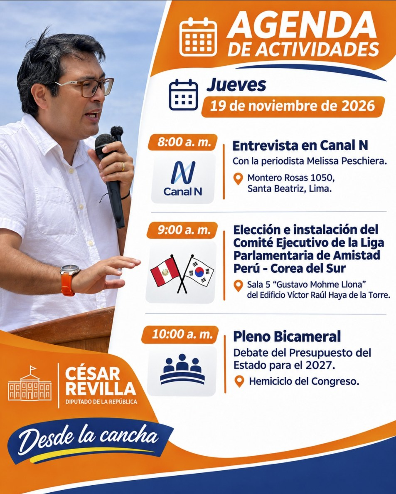

En breve: El 19 de noviembre de 2026, César Revilla tenía tres actividades: entrevista en Canal N, instalación de la Liga Perú–Corea del Sur y el Pleno Bicameral sobre el Presupuesto 2027.

Su agenda del jueves 19 de noviembre de 2026
Según la agenda difundida por su despacho, el diputado por Piura César Revilla (Fuerza Popular) tenía tres actividades:
| Hora | Actividad | Lugar |
|---|---|---|
| 8:00 a. m. | Entrevista en Canal N con la periodista Melissa Peschiera | Montero Rosas 1050, Santa Beatriz, Lima |
| 9:00 a. m. | Elección e instalación del Comité Ejecutivo de la Liga Parlamentaria de Amistad Perú–Corea del Sur | Sala 5 «Gustavo Mohme Llona», Edificio Víctor Raúl Haya de la Torre |
| 10:00 a. m. | Pleno Bicameral: debate del Presupuesto del Estado para 2027 | Hemiciclo del Congreso |
Liga Parlamentaria de Amistad Perú–Corea del Sur
El Congreso informó el 19 de noviembre que la Liga quedó instalada y que eligió por unanimidad a María Candelaria Ramos Rosales (Fuerza Popular) como presidenta. La vicepresidenta es Milagros Takayama Jiménez (Fuerza Popular) y el secretario, Leo Miguel De Paz Lancho (Renovación Popular). Sus integrantes acordaron elaborar un plan de trabajo para presentarlo a la Asamblea General. La Liga busca estrechar los vínculos de amistad y cooperación entre ambos países.
El debate del Presupuesto 2027 en el Pleno
Según el Congreso, el Pleno retomó el 19 de noviembre, a las 10:12 h, el debate de los dictámenes de la Ley de Presupuesto 2027, la Ley de Equilibrio Financiero y la Ley de Endeudamiento del Sector Público. Por acuerdo de la Junta de Portavoces Conjunta, senadores y diputados tienen tres horas cada grupo de cámara para intervenir, repartidas entre los grupos parlamentarios.
Durante el debate, diputados de Piura plantearon pedidos para la región, entre ellos fondos para reactivar obras paralizadas en la sierra, la culminación de establecimientos de salud en Ayabaca, Huancabamba, Huarmaca y Los Algarrobos, y el nombramiento de docentes de la Universidad Nacional de Piura. Después, la sesión pasó a cuarto intermedio y continuará el viernes 20 de noviembre a las 4:00 p. m., para elaborar un texto sustitutorio de los dictámenes.
César Revilla intervino en este debate: lee lo que propuso para el Presupuesto 2027 (video desde 6:48:57).
Para entender el tema
Lee qué incluye el Presupuesto 2027 y cómo se vota y cómo se crea una ley en el Perú.
Preguntas frecuentes
¿Qué actividades tuvo César Revilla el 19 de noviembre de 2026?
Según la agenda de su despacho, una entrevista en Canal N a las 8:00 a. m., la elección e instalación del Comité Ejecutivo de la Liga Parlamentaria de Amistad Perú–Corea del Sur a las 9:00 a. m. y el Pleno Bicameral sobre el Presupuesto 2027 a las 10:00 a. m.
¿Quién preside la Liga Parlamentaria de Amistad Perú–Corea del Sur?
María Candelaria Ramos Rosales (Fuerza Popular), elegida por unanimidad el 19 de noviembre de 2026, según el Congreso.
¿Se votó el Presupuesto 2027 el 19 de noviembre?
No. El Pleno debatió los dictámenes y pasó a cuarto intermedio. Según el Congreso, la sesión continúa el viernes 20 de noviembre a las 4:00 p. m.
Fuentes
- Congreso de la República (19 de noviembre de 2026): Liga Parlamentaria de Amistad Perú-Corea del Sur cuenta con nuevo Comité Ejecutivo
- Congreso de la República (19 de noviembre de 2026): Reinició debate parlamentario sobre dictamen de presupuesto del sector público 2027
- Congreso de la República (19 de noviembre de 2026): Diputados fijan posición y transmiten necesidades de pobladores en debate de presupuesto público
Sigue leyendo
Presupuesto público 2027: qué incluye y cómo se vota esta semana en el Congreso
Cuánto es, qué incluye y qué día se vota.
Leer →César Revilla en el Pleno del 19 de noviembre de 2026: lo que propuso para el Presupuesto 2027
Sus propuestas para el Presupuesto 2027, con transcripción.
Leer →Pleno del 19 de noviembre de 2026: de qué se habló y qué dijo cada bancada sobre el Presupuesto 2027
De qué se habló, qué pidió cada bancada y cómo terminó.
Leer →